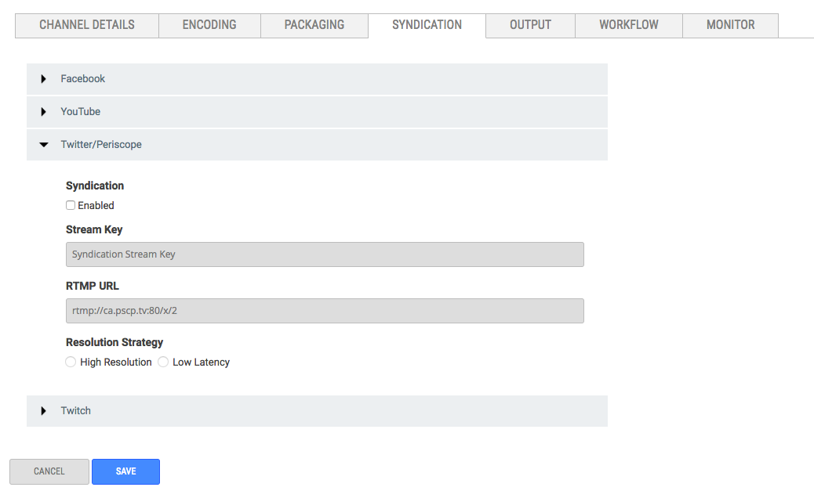

Syndicate live video to Periscope with just the stream key and RTMP URL.
Before You Start
You need to know the Stream Key and RTMP URL for the account you want to syndicate to.
Find the Server URL and Stream Key
Enter the following URL in a browser.
https://www.periscope.tv/account/producer
Twitter/Periscope Tab View

Configure Twitter/Periscope Syndication